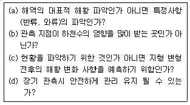
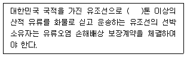

해양환경기사 (2010-05-09 기출문제)
1과목: 해양학개론
1. 관성류(inertial current)에 대한 설명 중 맞는 것은? (단, 북반구라고 가정한다.)
- 시계방향의 원운동이다.
- 시계반대 방향의 타원운동이다.
- 바람과 같은 방향의 왕복운동이다.
- 고위도에서 저위도보다 주기가 크다.
(정답률: 78%)

2. 달과 지구와의 인력차에 의하여 일어나는 조석의 일반적인 주기는?
- 12시간
- 12시간 25분
- 24시간
- 24시간 50분
(정답률: 86%)
3. 다음 중 망간단괴의 생성과 거리가 가장 먼 것은?
- 수온
- 저층류
- 열수작용
- 퇴적물 조직 및 퇴적속도
(정답률: 70%)
4. 해양 내에서 수중음파의 전파에 가장 영향을 주지 않는 것은?
- 수온
- 염분
- 수압
- pH
(정답률: 84%)
5. 우리나라 동해안의 경우 연안용승을 가장 잘 일으킬 수 있는 바람은?
- 동풍
- 서풍
- 남풍
- 북풍
(정답률: 76%)
6. 북반구에서 취송류의 방향은 바람방향에 대하여 어떤 방향이 되는가?
- 오른쪽
- 왼쪽
- 동일한 방향
- 방향이 정반대
(정답률: 92%)
7. 정상해수(염분 35‰)가 어는 빙점은 -2℃이다. 해수의 염분이 증가할수록 해수의 빙점은?
- 내려간다.
- 올라간다.
- 어느 정도까지 내려가다가 다시 올라간다.
- 변화가 없다.
(정답률: 89%)
8. 대양에서 산소 최소층(Oxygen minimum layer)이 존재하는 수심은?
- 0 ～ 300 m
- 500 ～ 1000 m
- 1000 ～ 1500 m
- 1500 ～ 2000 m
(정답률: 72%)
9. 석유생성 요인 설명으로 틀리는 것은?
- 수온 및 기후가 온난하여 유기물 생산력이 높아야 한다.
- 많은 유기물이 높은 퇴적률로 쌓인 후 산화환경을 이 루어야 한다.
- 쌓인 유기물이 탄소와 수소 성분만 남도록 적당한 온도와 높은 압력이 있어야 한다.
- 탄화수소가 집중되도록 공극률이 높은 암층이 있어야 하고 화산 활동은 적을수록 좋다.
(정답률: 59%)
10. 8월, 북대서양에서 증발한 수증기는 무역풍에 의해 서쪽으로 운반되고, 파나마운하를 빠져나와 태평양에서 비가 되어 강하하게 된다. 그 결과 염분 변화는 어떠하겠는가?
- 북태평양의 염분이 북대서양에서보다 높다.
- 북태평양과 북대서양의 염분이 같다.
- 북대서양의 염분이 북태평양에서보다 높다.
- 북태평양과 북대서양의 염분 변화는 없다.
(정답률: 85%)
11. 지형류란 어떤 힘들이 서로 평형을 이룰 때 나타나는 해류인가?
- 압력경도력과 코리올리힘
- 압력경도력과 바람응력
- 바람응력과 코리올리힘
- 가속력과 코리올리힘
(정답률: 90%)
12. 계절풍에 대한 설명으로 적합하지 않은 것은?
- 계절에 따라 바람의 방향이 바뀐다.
- 위도에 따른 태양복사 에너지의 차이 때문에 생긴다.
- 지구표면상의 대륙과 해양의 분포와 밀접하게 관련되어 있다.
- 아시아 대륙의 남쪽 및 남동 해상에서 현저하게 나타난다.
(정답률: 86%)
13. 천해파(shallow sea wave)의 파속(phase speed)과 수심과의 관계를 가장 올바르게 설명한 것은?
- 파속은 수심에 반비례한다.
- 파속은 수심의 제곱근에 비례한다.
- 파속은 수심에 정비례한다.
- 파속은 수심과 무관하다.
(정답률: 87%)
14. 대양저의 대부분을 차지하는 기반암은 주로 어떤 암석으로 되어 있는가?
- 안산암
- 현무암
- 화강암
- 조면암
(정답률: 81%)
15. 퇴적물의 입도 분석에서 입자의 크기가 0.004 mm 이하의 것은 어떤 범주로 분류되는가?
- 가는 자갈
- 모래
- 실트
- 점토
(정답률: 79%)
16. 대양저의 열류량에 대한 일반적인 양상 중 틀린 것은?
- 대서양 중앙해저 산맥에서는 높은 열류량을 나타낸다.
- 동태평양 해팽에서는 낮은 열류량을 나타낸다.
- 해구에서는 낮은 열류량을 나타낸다.
- 해저산맥의 측면을 따라 열류량이 작은 지역이 띠를 이룬다.
(정답률: 87%)
17. 좁은 해협을 통하여 외양과 연결되는 만에서 증발량이 많을 경우 해협에서의 해수운동은?
- 전층에서 만으로 유입하는 운동
- 전층에서 외양으로 유출하는 운동
- 상층은 만으로 유입, 하층은 외양으로 유출
- 상층은 외양으로 유출, 하층은 만으로 유입
(정답률: 86%)
18. 다음의 해수의 유용 화학물질 중 농도가 가장 높은 것은?
- Mg
- Ca
- K
- Br
(정답률: 76%)
19. 대기중에 용해되어 있는 화학 성분 중 온실효과로 인한 해수면의 상승과 다음 중 가장 관련이 깊은 것은?
- N2
- O2
- Ar
- CO2
(정답률: 84%)
20. 대륙사면의 표면에 가장 많은 퇴적물은?
- 자갈
- 모래
- 실트
- 조개껍데기
(정답률: 77%)
2과목: 해양생태학
21. 다음 중 하구역 간석지에 주로 출현하는 동물 가운데 모래가 많은 곳에 주로 서식하는 종류는?
- 칠게, 무당게
- 흰발농게, 엽낭게
- 넓적콩게, 칠게
- 농게, 세스랑게
(정답률: 80%)
22. 동물 플랑크톤이 바다에 분포하는데 영향을 주는 요인과 가장 거리가 먼 것은?
- 저서식물분포
- 수온
- 햇빛
- 식물성 플랑크톤의 양
(정답률: 68%)
23. 우리나라에서 평균 해수면을 중심으로 대수리, 지충이, 굴, 담치류 등이 우점종으로 나타나는 구역은? (단, 암반이 있는 저서생태계에서의 예이다.)
- 상부 조간대
- 중부 조간대
- 조하대 연변부
- 조상대 연변부
(정답률: 82%)
24. 타 서식처에 비하여 갯벌에 사는 생물이 갯벌환경에 적응하기 위해 필요한 생활습성 중 비교적 중요하지 않은 것은?
- 굴을 파거나 관을 만들어 생활하는 적응 능력
- 무산소 상태에서도 살아남을 수 있는 능력
- 데트리터스(detritus)를 먹이로 이용할 수 있는 능력
- 모래갯벌에서는 파도작용에 대피할 수 있는 능력
(정답률: 79%)
25. 다음 중 중독현상을 일으키는 유독성 적조생물은?
- 규조류 중의 Skeletonema, Chaetoceros
- 남조류 중의 Trichodesmium
- 편모조류 중의 Cerasium, Noctiluca
- 편모조류 중의 Alexandrium, Gymnodinium
(정답률: 83%)
26. 저서생물의 분포에 관한 설명 중 옳은 것은?
- 평균고조면 부근에 서식하는 생물군은 건조에 대한 내성이 약하다.
- 사질로 된 조간대를 점유하는 생물군에는 따개비류, 조개삿갓류, 딱지조개류 등이 있다.
- 저생 무척추동물의 약 80%가 유생단계를 거치는데 이들은 모두 임의로 해저를 선택한다.
- 해삼류와 거미불가사리류는 수천 m의 심해역에서도 서식한다.
(정답률: 72%)
27. 해양의 일차 생산력은 계절에 따라 크게 변화하는데 이에 관한 설명 중 틀린 것은?
- 위도가 높은 북극지방에서는 일년 중 여름철에만 생산력이 크게 증가된다.
- 온대 해양의 생산력은 봄과 가을에 크게 증대된다.
- 열대 해양의 생산력은 연중 계속 높다.
- 온대 해양에서 춘계 생산력증가가 감소되기 시작하는 것은 동물에 의한 포식의 결과이다.
(정답률: 68%)
28. 해양 표영 생태계 가운데 육상에서 유입되는 담수, 용승류 및 조석 혼합 등으로 영양염 농도가 높아 생산력이 높은 장소는?
- 조간대
- 조하대
- 연안역
- 대양역
(정답률: 68%)
29. 다음 중 서로 잘못 연결된 것은?
- 인과 질소 - 부영양화(富營養化)
- 오염물 증가 - COD 감소
- 유기물 증가 - 용존산소 감소
- 중금속 오염 - 생물 농축
(정답률: 81%)
30. 경성기질 조간대와 연성기질 조간대의 생물상 비교 설명 중 틀린 것은?
- 일반적으로 암초지대와 같은 경성기질 조간대의 생물상이 휠씬 다양하고 생물량도 높다.
- 암반 조간대의 생물상은 상대적으로 분명한 대상구조(대상구조)를 보이며, 부유물식자에 의한 우점율이 높다.
- 연성기질 조간대는 상대적으로 경사도가 낮아 대상구조가 분명하지 않고, 생물다양성도 낮다.
- 우리나라의 대표적인 연성기질 조간대인 갯벌은 주변의 어떤 서식처보다도 생물다양성은 물론 생물 생산성도 높은 것으로 잘 알려져 있다.
(정답률: 59%)
31. 하구역 생물 군집의 특성과 가장 거리가 먼 것은?
- 일부 파래나 홑파래 종류 이외에는 대형 해조류가 드물다
- 어류의 경우 크기가 작거나 치어나 유어가 주를 이룬다
- 어류의 경우 느리게 성장하고 낮은 생물량을 보인다.
- 하구역에서 장기간 출현하는 종은 대부분 광온성이다.
(정답률: 71%)
32. 남획(과도어획)의 징후와 가장 관계가 먼 것은?
- 단위노력당 어획량이 차차 감소한다.
- 어획노력이 강화되어도 총 어획량은 저하한다.
- 어획물에 암컷이 적어지고 수컷이 많아진다.
- 연령별 체장이 증가하거나 성성숙 연령이 낮아진다.
(정답률: 79%)
33. 연안에서 유기오염 지표종으로 사용되는 종들의 특징이 아닌 것은?
- 오염의 진행에 따라 개체수가 증가한다.
- 오염이 극심해지는 최후까지 견딜 수 있다.
- 환경이 회복됨에 따라 점차 서식밀도가 감소한다.
- 생활사가 짧고 생체량이 크다.
(정답률: 86%)
34. 오염물질 가운데 기형적인 성장과 생식불능의 임포섹스현상을 일으키는 원인물질은?
- TBT
- 유기수은
- 카드뮴
- PCB
(정답률: 81%)
35. 해양생물을 생태적 구분으로 분류할 때 적합하지 않은 것은?
- 부유생물(浮遊生物, plankton)
- 유영생물(遊泳生物, nekton)
- 외양생물(外洋生物, oceanic)
- 저서생물(底捿生物, benthos)
(정답률: 85%)
36. 하구역에 서식하는 생물상의 특징에서 하구토착종은?
- 멸치, 밴댕이
- 꽃게, 대하
- 숭어, 두줄망둑
- 뱀장어, 열어
(정답률: 78%)
37. 다음 중 해면동물이 생활하는데 있어 수류에 의한 물의 역할과 가장 거리가 먼 것은?
- 산소 및 먹이의 공급
- 노폐물의 제거
- 정자와 난자의 수송
- 영양염류의 공급
(정답률: 70%)
38. 중형저서동물을 구성하는 생물들 가운데 니질 환경에서 가장 우점한 생물군은?
- 선충류
- 요각류
- 패충류
- 다모류
(정답률: 44%)
39. 암반 조간대 생물이 간조기 수분 손실 방지를 위해 취하는 행동은?
- 바위에 부착하는 면적을 가능한 크게 한다.
- 패각에 많은 돌기를 내거나 패각의 색깔을 어둡게 한다.
- 서로 밀착하여 서식하면서 패각이나 덥개판을 굳게 닫는다.
- 다른 부착생물들과 독립적으로 생활한다.
(정답률: 85%)
40. 중형저서동물이 나타내는 일반적인 특징이 아닌 것은?
- 주로 육식자가 많다.
- 몸이 길게 연장되면서 구불구불하다.
- 부착기가 발달한다.
- 평형기가 발달한다.
(정답률: 65%)
3과목: 해양계측학
41. 조위 관측에서 압력식 검조기를 사용하여 얻어진 압력자료 중, 제일 먼저 제거해 주어야 할 것은?
- 대기압
- 풍압
- 파랑의 영향
- 평균 해면
(정답률: 73%)
42. 다음 중 파장이 가장 긴 전자파는?
- X선
- 자외선
- 가시관선
- 적외선
(정답률: 69%)
43. 바다에서 투명도를 측정하기 위한 백색원판(Secchi disk)을 제작할 때 직경으로 가장 적합한 것은?
- 15cm
- 30cm
- 50cm
- 80cm
(정답률: 80%)
44. 다음 중 시추한 해저 퇴적물의 구조를 관찰하는데 가장 적합한 기기는?
- 연 엑스선장치
- 감마선 감쇄장치
- 편광 현미경
- 전자 주사현미경
(정답률: 67%)
45. 위성 원격탐사의 장점이 옳게 설명된 것은?
- 전자파를 이용하므로 매우 정밀한 분석을 할 수 있다.
- 비용이 많이 드나 원하는 지역과 시기의 자료를 쉽게 구할 수 있다.
- 광범위한 지역을 동시에 탐사가 가능하며 사용위성에 따라서는 한반도를 동시에도 관측할 수 있다.
- 기상의 영향을 받지 않으며, 원하는 지점 및 시기의 연속적인 관측이 쉽다.
(정답률: 84%)
46. 원격탐사에서 해류나 조석 등 해면의 기복 연구에 많이 이용되는 전자파는?
- X선
- 자외선
- 가시광선
- 마이크로파
(정답률: 69%)
47. 해저 지형 조사 시 사용되는 장비와 가장 거리가 먼 것은?
- Multi beam echosounder
- DGPS
- Side scanning sonar
- Thermal scanner
(정답률: 65%)
48. 퇴적물 입도가 32㎛인 경우 파이(ø) 값은?
- 4
- 5
- 6
- 7
(정답률: 68%)
49. 세계기상기구(WMO)에서 지정한 파랑관측 코드는 몇 등급인가?
- 5
- 10
- 15
- 20
(정답률: 83%)
50. 외양역에서 주 온도약층(main thermocline)해수의 연직혼합 과정의 추적자로서 부적합한 방사성핵종은?
- 226Ra
- 90Sr
- 14C
- 3H
(정답률: 40%)
51. 다음 중 GEK 해류계를 이용하는데 가장 적합하지 않은 지구상의 위치는?
- 지자기 적도 부근
- 지자기 30° 부근
- 지자기 60° 부근
- 지자기 극 부근
(정답률: 79%)
52. 깊은 곳과 얕은 곳에서 채취한 두 개의 해수시료의 온위(Potential temperature)가 같았을 때 이 두 개 해수의 현장온도(in situ temperature)는?
- 깊은 곳의 것이 더 높다.
- 얕은 곳의 것이 더 높다.
- 양쪽이 같다.
- 환경(온도, 염분, 깊이)에 따라 다르다.
(정답률: 86%)
53. Sand 나 Silt 또는 이들이 혼합된 퇴적물을 많이 채취할 때 사용되는 채니기로 가장 적합한 것은?
- Ekman type sampler
- Dredge
- Core sampler
- Sigsbee sampler
(정답률: 73%)
54. 퇴적물의 조립질 입자의 입도 분석에 사용되는 기기와 가장 거리가 먼 것은?
- 기계식 요동기 (Ro-Tap)
- Air-Jet Sieve
- Rapid sediment Analyzer
- Pycnometer
(정답률: 81%)
55. 육상 혹은 해상에서 위치를 측정하는 방법 중 위성을 이용하는 것은?(오류 신고가 접수된 문제입니다. 반드시 정답과 해설을 확인하시기 바랍니다.)
- Loran
- Radar
- Rapid Sediment Analyzer
- Pycnometer
(정답률: 52%)
56. 유의파고 (Significant wave height)란?
- 파군(wave train) 중 가장 큰 파의 파고
- 모든 파랑의 파고를 평균한 것
- 파군 중 파고가 큰 1/3 파의 평균파고
- 파군 중 파고가 큰 1/10 파의 평균파고
(정답률: 77%)
57. 유속 관측 지점을 선정할 때의, 고려해야 될 사항과 가장 거리가 먼 것은?

- (a)
- (b)
- (c)
- (d)
(정답률: 71%)
58. 수온-염분도표(T-S diagram)로부터 알 수 없는 것은?
- 심층해수 순환
- 수직 안정도
- 수괴의 혼합
- 대기나 해저에 의한 수괴의 변질
(정답률: 89%)
59. 조석자료의 분석에서 잔여치가 조석과 비슷한 주기의 Oscillation을 보이는 경우에 대한 설명으로 틀린 것은?
- 조석의 각 분조를 분리해 내기에 관측 자료의 길이가 길다.
- 추출해내는 분조를 분리해 내기에 관측 자료의 길이가 길다.
- 관측 자료상의 시간 오차가 있다.
- 조석계의 시계작동이 불량하다.
(정답률: 48%)
60. 퇴적물 분석 중, Pipette나 Sedigraph는 어디에 사용되는 것인가?
- 조립질 시료의 입도분석
- 세립질 시료의 입도분석
- 조립질 시료의 중량 측정
- 세립질 시료의 중량 측정
(정답률: 72%)
4과목: 해수의 수질분석
61. 해저퇴적물 중 중금속 성분을 분석하는데 있어 가장 많이 사용되는 기기는 원자흡수분광광도계이다. 이 기기를 사용할 때 각 물질과 중공음극관의 파장이 틀린 것은?
- 구리 : 324.7 ㎚
- 망간 : 279.5 ㎚
- 아연 : 213.9 ㎚
- 알루미늄 : 248.3 ㎚
(정답률: 70%)
62. 퇴적물의 함수율 자료를 얻는데 필요한 자료가 아닌 것은?
- 젖은 퇴적물의 무게(시료 상태 그대로의 무게)
- 건조 퇴적물의 무게(시료를 건조시킨 후의 무게)
- 퇴적물의 밀도
- 젖은 퇴적물 무게와 건조 퇴적물 무게의 차이 값
(정답률: 80%)
63. 해양에서 투명도를 측정하는 방법 중 잘못된 것은?
- 지름 30cm의 백색 투명도 원판을 사용한다.
- 원판이 보이지 않는 깊이로 넣은 다음 이것을 천천히 끌어 올리면서 보이기 시작한 깊이를 0.1m 단위로 읽는다.
- 날씨가 맑을 때 직사광선을 피하여 선박의 그늘진 곳에서 측정한다.
- 조사선이 움직일 때라도 측정 가능하다.
(정답률: 80%)
64. 산 휘발성 황화물(AVS)의 분석방법에 대한 내용 중 틀린 것은?
- 황화물은 대기 중 산소와 접촉하게 되면 아주 빨리 산화되어 황산염으로 바뀌기 때문에 시료를 처리하는 전 과정에서 공기와 접촉하지 않도록 해야 한다.
- 황화물의 정량 시 적당량의 산을 가하여 퇴적물 내의 황화물을 황화수소 형태로 바꾼다.
- 발생하는 황화수소를 황산바륨으로 침전시킨 후 침전물의 무게를 측정한다.
- 발생하는 황화수소를 침전물(황화아연)로 포집하여 요오드적정법으로 정량한다.
(정답률: 71%)
65. 다음 중 해수의 중금속시료를 채취하는데 가장 적합한 채수기는?
- 반 돈(Van Dorn) 채수기
- 고 플로(Go-Flow) 채수기
- 스테인레스(Stainless) 채수기
- 난센(Nansen) 채수기
(정답률: 73%)
66. 가스 크로마토그래피법에서 유기물질을 정량할 때 기록계에 나타나는 여러 개의 peak가 각각 어떤 물질의 것인가를 어떻게 알아낼 수 있는가?
- 표준물질의 peak 높이와 비교해서
- 표준물질의 머무는 시간(retention time)과 비교해서
- 전자포획형 검출기를 사용해서
- 표준물질의 peak 폭을 비교해서
(정답률: 63%)
67. 해수시료를 알칼리성으로 하여 강산화제인 과망간산칼륨을 이용하여 실험하는 화학적산소요구량(COD)실험방법에 대한 내용 중 틀린 것은?
- 0.025N 티오황산나트륨용액으로 무색이 될 때까지 적정한다.
- 발색시약을 넣고 둥근바닥 플라스크에 냉각관을 붙여 끓는 수욕 중에 20분간 가열한다.
- 녹말지시약을 넣은 것은 종말점을 쉽게 확인하기 위해 넣는 것이다.
- 시료를 알칼리성으로 하기 위하여 20% 수산화나트륨 용액 1㎖를 첨가한다.
(정답률: 62%)
68. 해양생물 시료중의 유기염소계 농약을 기체크로마토 그래프로 분석할 때 유기용매로 추출한 후 기체크로마토 그래프에 주입하기 전에 실리카겔/알루미나 칼럼에 통과시켜 세착한다. 그 이유는?
- 염분을 제거하기 위해
- 수분을 제거하기 위해
- 지방 등 유기분석방해물질을 제거하기 위해
- 부유물질을 제거하기 위해
(정답률: 82%)
69. 검출한계에 관한 내용 중 틀린 것은?
- 검출한계는 지정된 공정시험방법에 따라 시험하였을 때, 바탕용액 농도의 오차범의와 통계적으로 다르게 나타나는 최소한 측정 가능한 농도를 의미한다.
- 이는 바탕용액 농도의 표준편차에 99% 신뢰구간에 해당되는 확률변수를 곱한 값으로 나타낸다.
- 예를 들어 7개의 바탕용액 농도의 표준편차가 0.1㎖/ℓ 일 때 확률변수, Tn-1, 99% (n = 7)는 3.707 이므로 검출한계는 바탕용액 농도의 평균 + (3.707)으로 표현한다.
- 검출한계 미만은 불검출된 것으로 간주한다.
(정답률: 56%)
70. 질소계 화합물 중 열역학적으로 비교적 안정되어 있기 때문에 일반화학적 발색반응방법은 적용하기가 어렵거나 방법상의 간섭효과가 심하여 정확도와 정밀도가 매우 열악하므로 카드뮴 환원관을 이용하여 측정하는 항목은?
- 암모니아 질소
- 아질산 질소
- 질산 질소
- 총 질소
(정답률: 70%)
71. 해수의 규산규소 분석방법에 대한 설명 중 틀린 것은?
- 시료 10 ㎖에 몰리브덴산용액 4 ㎖를 첨가 혼합하고 약 10분간 반응시킨다.
- 환원용액 6 ㎖을 첨가한 후 즉시 혼합하여 약 2～3시간 동안 반응시킨다.
- 분광광도계의 셀에 넣고 640 ㎚의 파장에서 흡광도를 측정한다.
- 흡광도와 농도의 상관관계식을 이용하여 농도를 환산한다.
(정답률: 56%)
72. 유출유 시료의 보관방법에 관련된 설명 중 틀린 것은?
- 시료의 산화방지를 위하여 차광하여 냉암소에 보관한다.
- 산소를 제거하기 위하여 질소 또는 탄산가스를 주입한다.
- 가스크로마토그래피 분석시료는 생물에 의한 산화방지를 위하여 -10 ~ -20℃로 냉각하여 보관한다.
- 휘발성 물질의 손실을 방지하기 위하여 차광용기를 이용한다.
(정답률: 34%)
73. 총 유기탄소(TOC)측정에 사용되는 방법은 연소 후 발생하는 유기물의 산화분인 CO2의 정량이다. 이때 사용되는 감지기의 종류는?
- 흡광도 감지기
- 비분산형 적외선 감지기
- 형광 감지기
- 자기공명 감지기
(정답률: 50%)
74. 원자흡광광도법(Atomic Absorption Spectrometry)에 대한 설명 중 옳지 않은 것은?
- 장치는 광원부-시료원자화부-단색화부-측광부로 배열된다.
- 광원은 원자흡광 스펙트럼선의 선폭보다 좁은 선폭을 갖고 휘도가 높은 스펙트럼을 방사하는 중공음극램프(hollow cathode lamp)가 많이 사용된다.
- 원자흡광분석에 사용되는 어떠한 불꽃이라도 가연성가스와 조연성가스의 혼합비는 감도에 크게 영향을 준다.
- 표준첨가법에 의한 검량선 작성 시 표준물질이 같은 농도로 함유되도록 표준용액을 첨가한다.
(정답률: 63%)
75. 윙클러법에 의한 해수중의 용존산소 측정에서 황산을 가했을 대 망간의 원자가는 어떻게 변하는가?(오류 신고가 접수된 문제입니다. 반드시 정답과 해설을 확인하시기 바랍니다.)
- +2
- +3
- +5
- +7
(정답률: 58%)
76. 다음 시험법 중 증류장치가 필요한 항목은?
- 알킬수은
- 철
- 시안
- 아질산성질소
(정답률: 75%)
77. 흡광광도계를 이용하여 chlorophyll을 측정할 경우 탁도 blank 값으로 사용하는 파장은?
- 750 ㎚
- 665 ㎚
- 630 ㎚
- 480 ㎚
(정답률: 57%)
78. 해수중의 용존산소량(DO)을 정량하는 데에는 Winkler 방법이 이용된다. 이 방법으로 용존산소를 고정시키기 위하여 쓰이는 시약은?
- KIO3
- KMnO2
- Na2S2O3
- MnCl2
(정답률: 60%)
79. 라우릴 트립토스 부이온을 넣은 발효관을 온도 35±0.5℃에서 48±3 시간 배양하여 가스가 발생하면 대장균군이 있는 것으로 간주하는 시험은?
- 완전시험
- 정량시험
- 추정시험
- 확정시험
(정답률: 75%)
80. 해저퇴적물의 입도분석 방법이 아닌 것은?
- 건식 체질법
- 레이저 회절법
- 습식 체질법
- 유기용매추출법
(정답률: 69%)
5과목: 해양관련법규
81. 유류오염손해배상 보장법상 선박소유자에 대한 손해배상청구권에 관한 설명으로 옳은 것은?
- 유류오염손해가 발생한 날부터 1년 이내에 재판상 청구가 없는 경우에는 소멸한다.
- 유류오염손해가 발생한 날부터 3년 이내에 재판상 청구가 없는 경우에는 소멸한다.
- 유류오염손해의 원인이 되었던 최초의 사고가 발생한 날부터 3년 이내에 재판상 청구가 없는 경우에는 소멸한다.
- 유류오염손해의 원인이 되었던 최초의 사고가 발생한 날부터 5년 이내에 재판상 청구가 없는 경우에는 소멸한다.
(정답률: 82%)
82. 해양오염방지협약상 해양생태학적 조건과 운송의 특수한 성격으로 해양오염방지를 위한 강제조치가 요구되는 해역은?
- 경계해역
- 주의해역
- 특별해역
- 특수해역
(정답률: 80%)
83. 해양환경관리법상 기름의 해양유출사고에 대비하여 방제선을 배치해야 하는 선박 기준으로 옳은 것은?
- 총 톤수 300톤 이상의 유조선
- 총 톤수 500톤 이상의 유조선
- 총 톤수 3000톤 이상의 선박
- 총 톤수 5000톤 이상의 선박
(정답률: 65%)
84. 다음 ( )안에 들어갈 가장 알맞은 것은?

- 200
- 500
- 1000
- 2000
(정답률: 82%)
85. 해양환경관리법에서 사용하는 용어의 정의로 틀린 것은?
- “배출”이라 함은 오염물질 등을 유출ㆍ투기하거나 오염물질 등이 누출ㆍ용출되는 것을 말한다.
- “유해액체물질”이라 함은 해양환경에 해로운 결과를 미치거나 미칠 우려가 있는 액체물질(기름을 제외한다)과 그 물질이 함유된 혼합 액체물질을 말한다.
- “오염물질”이라 함은 해양에 유입 또는 해양으로 배출되어 해양환경에 해로운 결과를 미치거나 미칠 우려가 있는 폐기물ㆍ기름ㆍ유해액체물질 및 포장유해물질을 말한다.
- “대기오염물질”이라 함은 휘발성유기화합물 및 대기환경보전법 제2조 제1호에 해당하는 물질(오존층파괴물질을 제외한다)을 말한다.
(정답률: 69%)
86. 유류오염손해배상 보장법상 계산단위의 의미로 옳은 것은?
- 미국 달러화에 대한 원화의 환율
- 국제통화기금의 특별인출권
- 원화와 일본 엔화의 교환비율
- 증권사에 상장된 주식의 평균시세
(정답률: 82%)
87. 해양환경관리법상 해양환경관리종합계획에 관한 설명으로 틀린 것은?
- 국토해양부장관은 해양환경의 보전ㆍ관리에 관한 사항에 대하여 해양환경관리종합계획을 3년마다 수립ㆍ시행하여야 한다.
- 해양환경관리종합계획은 해양수산발전위원회의 심의를 거쳐 확정한다.
- 국토해양부장관은 해양환경관리종합계획이 수립된 때에는 이를 관계 행정기관의 장에게 통보하여야 하며, 해양환경관리종합계획을 통보받은 관계 행정기관의 장은 그 시행을 위한 필요한 조치를 하여야 한다.
- 국토해양부장관은 해양환경관리종합계획의 수립을 위하여 필요한 경우에는 관계 행정기관의 장에게 자료의 제출을 요구할 수 있다. 이 경우 관계 행정 기관의 장은 특별한 사정이 없는 한 이에 따라야 한다.
(정답률: 79%)
88. 유류오염손해배상 보장법상 선박소유자 손해배상의 면책이 인정되는 경우는?
- 유조선의 감항성이 부족한 경우
- 용선자의 상사과실로 발생한 경우
- 제3자의 고의만으로 발생한 경우
- 타선과 쌍방과실로 충돌한 경우
(정답률: 85%)
89. 해양환경관리법상 해양오염영향조사에 관한 설명으로 틀린 것은?
- 선박 또는 해양시설에서 일정 규모 이상의 오염물질이 해양에 배출되는 경우에는 그 선박 또는 해양시설의 소유자는 해양오염영향조사기관을 통하여 해양오염영향조사를 실시하여야 한다.
- 해양오염영향조사는 오염물질에 의하여 해로운 영향을 받게 되는 자연환경, 생활환경 및 사회ㆍ경제환경 분야 등에 대하여 실시하여야 한다.
- 해양오염영향조사기관은 해양오염영향에 대한 조사서를 작성함에 있어 미리 설명회 또는 공청회를 개최하여 해당 조사 대상지역 안에 거주하는 주민의 의견을 수렴한 후 이를 해양오염영향조사서의 내용에 포함시켜야 한다.
- 지정취소 또는 업무정지의 처분을 받은 해양오염영향조사기관은 그 처분 전에 체결한 해양오염영향조사에 한하여 그 조사를 계속 할 수 없다.
(정답률: 69%)
90. OPRC 협약에서 규정하고 있는 사항이 아닌 것은?
- 선박내 기름기록부 비치, 기록의무 규정
- 선박내 기름오염긴급계획서 비치의무
- 기름오염 대비ㆍ대응을 위한 국가긴급계획 수립
- 인접국가간 기름오염 대비ㆍ대응에 관한 협정체결
(정답률: 69%)
91. 해양환경관리법령상 해양경찰청장 소속 해양환경감시원의 직무가 아닌 것은?
- 폐기물해양배출업자, 해양오염방제업자, 유창청소업자, 폐기물 위탁자가 운영하는 시설에 대한 검사ㆍ지도
- 해양시설에서의 방제선등의 배치ㆍ설치 및 자재ㆍ약제의 비치 상황에 관한 검사
- 오염물질의 배출 또는 배출혐의가 있다고 인정되는 경우 조사활동 및 감식ㆍ분석을 위한 오염시료 채취
- 해양공간으로 유입되거나 해양에 배출되는 폐기물의 감시
(정답률: 41%)
92. 유류오염손해배상 보장법상 유류의 범주에 포함되지 않은 것은?
- 원유
- 중유
- 지속성 식물성유
- 윤활유
(정답률: 74%)
93. 유류오염손해배상보장법에 따른 책임제한사건의 관할 전속에 대한 설명으로 맞는 것은?
- 유류오염손해가 발생한 곳을 관할하는 지방해양경찰청에 전속한다.
- 유류오염손해가 발생한 곳을 관할하는 해양안전심판원에 전속한다.
- 유류오염손해가 발생한 곳을 관할하는 지방법원에 전속한다.
- 유류오염손해가 발생한 곳을 관할하는 지방해양항만청에 전속한다.
(정답률: 77%)
94. 해양오염방지협약상 항행중인 유조선이 바다에 기름을 배출할 수 있는 조건으로 틀린 것은?
- 특별해역 내에 있지 않을 것
- 가장 가까운 육지로부터 5-해리 이상의 거리일 것
- 유분의 순간 배출률이 1해리당 100ℓ이하일 것
- 기름배출감시제어장치 및 슬롭탱크장치를 작동 중일 것
(정답률: 79%)
95. 해양환경관리법령상 특별관리해역이 아닌 것은?
- 부산연안
- 울산연안
- 함평만
- 마산만
(정답률: 76%)
96. 해양오염방지협약상 국제유류오염방지증서(International Oil Pollution Pretection Certificate)의 유효기간은?
- 3년
- 4년
- 5년
- 6년
(정답률: 74%)
97. 해양환경관리법상 해양환경관리공단의 채권발행에 관한 설명으로 틀린 것은?
- 해양환경관리공단은 이사회의 의결을 걸쳐 채권을 발행할 수 있다. 이 경우 국토해양부장관의 승인을 얻어야 한다.
- 국토해양부장관은 채권발행을 승인하는 경우에는 미리 기획재정부장관과 협의하여야 한다.
- 국가는 공단이 발행하는 채권의 원리금의 상환을 보증할 수 있다.
- 채권의 소멸시효는 상환일부터 기산하여 원금은 3년, 이자는 1년으로 완성한다.
(정답률: 59%)
98. 어장관리법상 어장정화ℓ정비업의 등록을 할 수 있는 자는?
- 금치산자나 한정치산자
- 파산선고를 받고 복권되지 아니한자
- 수산업법을 위반하여 금고 이상의 형의 집행유예를 선고받고 그 유예기간 중에 잇는 자
- 어장정화ㆍ정비업의 등록이 취소된 자로서 그 등록이 취소된 날부터 5년이 지난 자
(정답률: 83%)
99. 해양오염방지협약상 선상기름오염비상계획을 선내에 비치하여야 할 대상 선박은?
- 총 톤수 50톤 이상인 유조선 및 총 톤수 150톤 이상인 일반 선박
- 총 톤수 100톤 이상인 유조선 및 총 톤수 500톤 이상인 일반 선박
- 총 톤수 150톤 이상인 유조선 및 총 톤수 400톤 이상인 일반 선박
- 총 톤수 200톤 이상인 유조선 및 총 톤수 300톤 이상인 일반 선박
(정답률: 77%)
100. 습지보전법상 습지보호지역의 지정대상에 해당되지 않는 것은?
- 자연상태가 원시성을 유지하고 있거나 생물다양성이 풍부한 지역
- 희귀하거나 멸종위기에 처한 야생동ㆍ식물이 서식ㆍ도래하는 지역
- 습지생태계의 보전상태가 불량한 지역 중 인위적인 관리 등을 통하여 개선할 가치가 있는 지역
- 특이한 경관적ㆍ지형적 또는 지질학적 가치를 지닌 지역
(정답률: 67%)
관성류는 지구 회전에 의해 발생하는 해류로, 북반구에서는 시계방향으로 원운동을 한다. 이는 지구 회전 방향과 같은 방향으로 움직이기 때문이다. 이러한 관성류는 대기순환과 밀접한 관련이 있으며, 바람과 함께 작용하여 지형적인 영향을 받는 지역에서는 강한 해류가 발생할 수 있다. 또한, 고위도에서 저위도로 갈수록 주기가 커지는 것도 특징 중 하나이다.